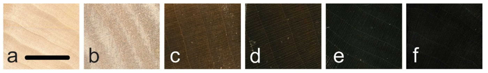

Advanced Sustainable Systems
"Plasma etching of wood surfaces can create a super-black material with low reflectivity in UV/Vis range... forming low density, lignin-enriched surface nanostructures."
Read PaperDiscovered at the University of British Columbia, Nxylon traps over 99% of light using natural cell structures. A sustainable, pigment-free revolution in light absorption.
Traditionally, the darkest woods are either unsustainably rare or chemically treated. Nxylon achieves its deep, rich black color without any additives.

Nxylon uses plasma technology to alter the surface chemistry of wood, enriching the natural lignin to form new surface colors without any added dyes or chemical pigments.
Nxylon sculpts the wood cells into deep pits that trap incoming light. At its darkest, it absorbs as much as 99.32% of visible light.
While natural nanostructures can be delicate, we infuse Nxylon surfaces with a bio-based polymer layer to protect them against physical wear and UV degradation.
Nxylon replaces chemical coatings and endangered exotic woods with a clean, renewable, and bio-based solution.
Harvested from locally-sourced, low-density, sustainable wood species like Basswood and European Lime, avoiding the exploitation of threatened, slow-growing darkwoods like ebony or rosewood.
The plasma etching process uses only electricity and oxygen gas. No water waste, no chemical runoff, and no heavy metal residues.
Nxylon's light-trapping properties are bound directly to the wood surface, making it safer to handle and free of harsh chemicals.
"Plasma etching of wood surfaces can create a super-black material with low reflectivity in UV/Vis range... forming low density, lignin-enriched surface nanostructures."
Read Paper"At first glance, this may look like a regular watch, but if you look closely at the face, you'll see almost nothing. That's what makes it so exciting."
Watch Segment"Forestry professor Philip Evans and PhD student Kenny Cheng were experimenting with high-energy plasma etching... But when they used the same etching technique on the wood's end grain, everything went dark – extremely dark."
Read Article"The simple flip of a wood sample, from its longitudinal edge to the transverse, showed that a common, light-colored wood could mimic — and surpass — the velvety color of dark hardwoods..."
Read ArticleCurious about Nxylon? For general inquiries, collaborations, sales, or press, please reach out to us via email.
Contact Us